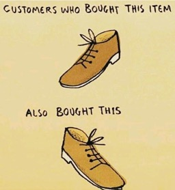

{kind=link}
{kind=link}
{kind=link}
{kind=link}

3 The Data Science Project Lifecycle
3.1 Introduction
A data scientist finds an interesting set of data, builds a clever analytical model, and changes the world.
This sounds great; unfortunately, data science projects do not unfold this way in the real world. At least not most of them; almost none of them. In this section we examine the typical structure of data science projects in non-research settings—that is, a project to solve a specific problem in an organization. Let’s call it the business problem, acknowledging that such problems arise in industry, government, and non-profit organizations alike. The next chapter takes a closer look at data science in research settings.
Data science models play a big part in this, but it is not where we start. Building a model is just one step in the lifecycle of a data science project.
Projects involve many steps, diverse teams, and projects can fail at any step. The model building phase is not where most unsuccessful projects go off the rails. Industry analyst firm Gartner estimated in 2016 that about 60% of data science projects are failing and admitted two years later that was an underestimate; the real failure rate was closer to 85%. That is a sobering statistic, and many reasons are cited for the failures:
- Difficulties inherent in integrating data-driven solutions with existing processes and applications
- Management resistance and internal politics about project ownership, budget, etc.
- Lack of skills
- Lack of quality data
- Security and governance challenges
The most important reason for failure of data science projects is called the “last-mile problem” of data science: the struggle to deploy the result of the data analysis (models) into processes and applications where they are used by the organization and are serving the intended end user. It is one thing to build from historical data a model that can predict customer churn accurately. If the goal is to provide a customer service representative with a real-time prediction of a customer’s tendency to cancel a service and to recommend an action, e.g., to give a discount, the project is not complete until the model is incorporated into the system through which customers and representatives interact.
It is best to recognize the reality that data science projects will likely fail unless they are carefully planned and executed. Successful projects combine technical skills with soft skills such as communication, trust building, transparency, and empathy. Successful projects are a team sport that incorporate collaboration and communication throughout the project cycle with data scientists taking on multiple roles. The data scientist is at times evangelist, planner, presenter, data wrangler, modeler, software developer, engineer, facilitator, implementer, storyteller, auditor.
It is often said that data scientists spend 80% of their time wrangling and cleaning data. That is not true, but the narrative reveals that a data scientists’ job entails much more than the technical aspects of building models on prepared data sets. A good portion of the job is to meet people, interact about project requirements, communicate insights, manage projects, etc. In the terminology of people management, data scientists are “T-shaped people” who combine depth of expertise with broad cross-functional competencies (Figure 3.1).
This allows data scientists to understand and communicate about many disciplines and systems (the horizontal bar of the generalist) combined with deep expertise in at least one discipline or system, e.g., cloud-based machine learning (the vertical bar of the expert). As a data scientist you work both independently and collaboratively.
The associated skill sets are exercised during the key stages in the data science project lifecycle.
Our methodology calls out seven phases in the project: discovery, data engineering, model planning, model building, communication, deployment, and monitoring (Figure 3.2).
Other process models for data science exist, for example CRISP-DM, the cross-industry standard process for data mining is the foundation of the data science process model according to the Data Science Process Alliance. CRISP-DM is shown in Figure 3.3.
The process models use similar terms and stages, what matters is not the labels but the general flow that results in a data-driven solution to a real-world problem, that the stages are iterative, and that a project does not start with modeling data. To deliver a production data project that is used repeatably by an organization requires many steps before and after the data modeling phase.
The modules of this book are organized according to the flows in Figure 3.2 and Figure 3.3. During the discovery phase we develop an understanding of the business problem and whether it can be solved with data technology. The data engineering phase develops our understanding of available and needed data sources and how to prepare the data for the modeling phase. Modeling comprises planning and building of statistical, machine learning, and AI models to address the core of the business problem. The models need to be evaluated against metrics that map back to the business problem. Models that perform well on statistical grounds but do not move the needle on key business metrics are not helpful. This step also involves communicating the data science solutions to stakeholders outside of the immediate team. If the project is accepted at this stage, the model needs to be integrated and deployed and its performance monitored.
In the following paragraphs we introduce the phases of the project life cycle a bit further, then dedicate entire modules to the steps.
3.2 Discovery and Business Understanding
During the Discovery phase the business problem is identified and defined with enough specificity to facilitate answering the question: “Does the problem translate to data science?” A problem statement such as “We need to increase revenue” is not specific enough. The question “does a modified user interface for the checkout process increase online sales?” is more specific; it provides information about the target (online sales) and how it is related to measurable changes.
The question “Can wildlife species be identified with at least 80% accuracy from drone video?” is very specific, it identifies the goal (wildlife identification), the methodology (drone video), and what success looks like (accuracy greater than 80%). Many questions still need to be addressed before this results in a successful data science project. How will the video be taken (geographic location, flight height, type of camera, time of day, etc.)? Will wildlife be identified based on tracks, signs of habitation, animal images? Are there existing models for object detection that can be used directly or enhanced via transfer learning?
The data scientist can help to increase specificity of the problem formulation by asking the right questions. Domain experts think and communicate in terms of subject matter. Data scientists can link the problem to data and analytic methods where that is possible. To measure the level of financial risk exposure the Chief Risk Officer of a bank is interested in forecasting VaR, the value at risk in their investment portfolio for the next two weeks. The data scientist can translate this into a simulation study: based on historical data of investment position values states of the market are simulated and the portfolio is evaluated against the simulated future market states. VaR is calculated as the 95th percentile of the distribution of simulated values.
Data science is powerful but not all questions are solved by analyzing data. The best approach might be to build a handcrafted expert system by translating existing knowledge and logic into software (think “TurboTax”) or to develop a piece of hardware. We need to be honest and transparent if data science cannot provide what is asked for. The adage that if you have only a hammer then everything looks like a nail applies here.
The results of a data science project need to be relevant and solve a real-world problem. A client once conveyed the following anecdote: he was approached by the data science team that proudly demonstrated a new algorithm to predict a customer’s age based on their online behavior. The executive responded “That’s cool. But we do know their date of birth.”

During the Discovery phase we are beginning to deepen our data understanding. What type of data might be needed to solve the problem, and what data sources are available to us? Exploratory data analysis and visualizations inform us about the shape of the data, the distribution of the variables and possible relationships. Data quality issues will surface during this phase.
It is important to carefully document what you find and the decisions that are being made. Why are certain data included or excluded? How are variables defined, what metadata is available? What data quality issues have surfaced (outliers, missing values, inconsistent variable definitions, etc.)? This information is important during the next stage when we use data engineering to prepare data for analysis. Just because two tables have a field customer_id does not imply that we can join the tables on that field. Missing values can be replaced by actual or computed values, but such data imputation is not without pitfalls either.
During the Discovery phase it is also not too soon to consider the ethical concerns and implications of the project. If data will be used or collected from individuals, do we have the consent to do so? Are there potential biases that could lead to poor outcomes by perpetuating stereotypes or by withholding resources? As algorithms and models are becoming more complex, less interpretable, and more easily automated, our need for transparency increases. Data scientists play an important role in recognizing and avoiding the introduction or continuation of bias in data-based decision making. We are devoting an entire chapter to the important topic of ethical decisioning with data.
3.3 Data Engineering
If the real-world problem translates into a data science activity, we progress to the next stage. In the CRISP-DM methodology, this phase comprises two steps: data understanding and data preparation. We combine these into a single stage.
During the Data Engineering stage the translation of the business understanding into a data science activity is made concrete by identifying, collecting, and working with the data that will be used to build the data solution. Are the data available to us? What is their size and quality? Are additional attributes required, if so, where do they come from? Do we need to collect more data, or can we obtain data from a 3rd party source (for free, for fee)?
How is raw data converted into usable form? How is data from multiple sources integrated, cleansed, and processed? It is not uncommon these days to have data stored in multiple clouds as well as on-premises systems—how do these data come together for analysis in one place?
In data science projects that go beyond reporting and building dashboards, the projects that involve data scientists building models to cluster, predict or classify, it is unusual to work directly with the raw data. Instead, data will be organized, cleansed, and stored to fit the subsequent modeling needs. How will the data be prepared for analysis and where is that data stored? Traditionally, analytic tables are two-dimensional arrays of rows and columns, where columns have simple data types such as integers, doubles, or strings. Increasingly, data can be served to analytics as JSON structures, in Parquet format, or in feature stores designed for machine learning. Data engineers and data scientists need to agree on the “best” format considering efficiency, tooling, cost, etc.
The answer and approach to many of these questions depends on what you want to do with the data. We are looking down the road to the modeling phases and it is a great time to emphasize that the data science project cycle is not a single clockwise motion but an iterative process.
What data sources you consider is informed by the types of models you are imagining (Model Planning and Model Building stages). On the other hand, the types of data that can be made available at sufficient quantity and quality will inform the types of models you can plan for.
It is often stated that 80% of the data science project is data engineering and data preparation. That is not true. What is true is that you should spend effort here because not having the right data prepared in the right way can invalidate the subsequent steps and jeopardize the project. It is also true that in smaller organizations you might not find dedicated data engineering teams that could do the heavy lifting in preparing high-quality data for analysis; some of that work then falls to the data scientist. It is also true that many data scientists find themselves spending more time engineering data than they hoped or expected.
Imagine that you find a very strong relationship between patient well-being and a health metric in a long-term study only to find out when you communicate the results that the definition of the health metric was changed half-way through the study.
Imagine that you fail to find evidence for the effects of climate change in a multi-national study and discover later that during merging of data from different countries measurements in imperial and metric units were intermingled and that temperatures in degrees Fahrenheit were not converted to degrees Celsius.
When data are missing, we must ask questions about why the data points are unobserved. Are entire records missing, for example, when a group of the population was not included in the data collection? Were measurements unobservable because of limited precision of the instruments? Did subjects drop out of the study, if so, is the dropout related to the purpose of the study? Is the reason why survey recipients did not answer questions related to the study itself?
Some typical tasks during the Data Engineering stage involve
Data Sources: Final selection of the data sources.
Data Exploration: Profiling and exploring data tells us what we are dealing with, identifies relationships and patterns, and suggests further questions to ask of the data.
Data Quality: The result of this is clean and consistent data with known properties. Modifications to raw data are documented. Any remaining data quality issues are documented.
Data Integration: Merging and joining of data sets, creation of new attributes (feature engineering), re-formatting of data, renaming of columns.
Data Delivery: The result of data preparation is made available in an agreed-upon format, for example, as Parquet files stored in S3 or as tables in a database.
3.4 Modeling
What is in a Model?
The term model is pervasive in our field, and we come to this conversation with different notions of what constitutes a model. Before going any further in the discussion, we’ll discuss the concept of a model in the context of data science.
From the 30,000 foot view a model is simply a mechanism to process some input and produce a corresponding output (Figure 3.4).
The input to drive the model algorithm is almost always some form of data. The algorithm that processes the inputs can be based on data, but that is not necessarily so. Suppose the problem we are trying to solve is to ascertain an individuals annual federal income tax. The problem is solved with a model that takes as input the individuals financial situation. This information is typically known without error as information about income, property taxes, expenses, etc. is well documented. The algorithm processing this input is a translation of the relevant information in the federal income tax laws into machine instructions. The output is the amount of money owed to the government or expected as a refund.
Now suppose that for some reason the input data in the tax problem is not known without error. For example, income from tips, medical expenses or charitable contributions might be best guesses rather than exact amounts. Income data could be noisy because foreign income is converted at fluctuating exchange rates. If the input data is the realization of stochastic (random) influences, should we modify the algorithm?
When the input data to an algorithm is the result of observing random variation, we are looking to the algorithms of the model to find the signal in the data, to de-noise it. The signal located in the data is then transformed into the model output. Most models we build in data science are of this kind because the data we work with is inherently noisy. The reasons for the random variations are many: selecting observation from a larger population at random, applying treatments to randomly chosen experimental units, variations in measurement instruments and procedures, variations in the environment in which a phenomenon is observed, and so on. The algorithms we use depend on the goals of the analysis, properties of the data, assumptions we are willing to make, attributes we look for in competitive models, and personal preferences.
Much of data science methodology is to select the right approach (algorithm) based on input data, learning methodology (supervised, unsupervised, semi-supervised, self-supervised) and analysis goal (prediction, recommendation, classification, clustering, dimension reduction, sequential decisioning), to train the model, and to deploy the model. Figure 3.5 is an attempt at structuring the input, algorithm, and output components of a model in the data science context. The diagram is complex and woefully incomplete and is intended to give you an idea of the diversity of methods and the many ways we can look at things. For example, in discussing input data we could highlight how data are stored, how fast it is moving, the degree to which the data is structured, the data types, and so forth. There are many other categorizations of data one could have listed.
The categorization of algorithms—what many consider the models in the narrow sense—leaves out semi-supervised learning, self-supervised learning, transfer learning, and other learning methods. Volumes of books and papers have been written about every item in the list of algorithms and many algorithms are represented by a simple description. Multilayer networks, for example, include artificial neural networks, deep networks such as convolutional and recurrent networks, and transformer architectures such as GPT.

George E.P. Box is credited with coining the much-used phrase “all models are wrong, but some are useful”. The phrase appears partially (“all models are wrong”) twice in his 1976 paper on Science and Statistics (Box 1976):
Since all models are wrong the scientist cannot obtain a “correct” one by excessive elaboration.
Since all models are wrong the scientist must be alert to what is importantly wrong.
The full phrase appears on p. 424 of his book with Norman Draper (Box and Draper 1987).
The takeaway is that any model is an abstraction of a phenomenon and we strive to find a useful abstraction. The model does not attempt to reproduce the phenomenon. The tax algorithm converts the essence of the tax code into machine instructions, it is not an electronic copy of the entire law. The purpose is to accurately calculate an entity’s tax, anything else can be stripped away. An algorithm processing noisy data that reproduces the data is uninteresting. The goal is to abstract the data in such a way to allow separating the signal from the noise and to convert the signal into the desired output.
The first G.E.P. Box quote instructs us not to overdo it in building models; this translates to the problem of overfitting in data science, crafting a model that follows the training data too closely and as a result does not generalize well to new data points. If the goal is to predict, classify, or cluster the unseen; generalizability of the model is key. A model to forecast stock prices or trading volumes is judged by how well it can predict the future, not by how well it can predict the past. The adequate level of generalization for that model must be wrung from current and past stock prices. Finding the appropriate level of abstraction is resolved by striking the right balance in the bias-and-variance tradeoff.
John von Neumann is said to have remarked
With four parameters I can fit an elephant and with five I can make him wiggle his trunk.
If the point of the model is to capture the essence of the elephant, then four parameters would be enough.
The second G.E.P. Box quote instructs us that models are abstracting away features of the phenomenon. If these are important features, the model is not useful. In the best case this model does not meet its goal and is revised or abandoned. In the worst case the model leads to bad decisions and harmful outcomes.
No matter how complex the model, we need to strive to understand how it works (interpret the model), not just what it does. If a model is not intrinsically interpretable then we need to strive to explain the forces that drive the model, keeping in mind that we are then making statements about the model and not about the underlying phenomenon we have abstracted.
It might seem like a daunting task to command the plethora of complexity displayed in Figure 3.5, understand all the pros and cons, grok the idiosyncrasies of software implementations, write code to train the model(s), communicate the results, and possibly implement a solution within a business context.
That is what we are here for.
Model Planning
We have seen that model is a generic term for a system that takes inputs, processes them according to algorithmic logic and produces outputs (Figure 3.4). ChatGPT is a model (a large language model) that takes input in the form of text prompts, passes the prompts through a pre-trained transformer algorithm, and generates text responses. The ChatGPT model contains parameters, unknown quantities for which we need to find values before the model can be used. This is known as training the model. Once trained, the algorithmic logic of the model can be applied—this step is often referred to as model inference in machine learning or scoring in statistics.
Types of algorithms
Statistical models and machine learning models are trained on data. The training process shapes the capabilities of the model based on the training data. As a rule, more complex models require larger training data sets. The following table shows the increasing complexity (as measured by the number of parameters) of Open AI’s GPT foundation models. GPT-3.5 has 175 billion parameters and essentially was trained on text data scraped from the internet.
| Version of GPT | Released | Number of Parameters |
|---|---|---|
| GPT-1 | June 2018 | 117 million |
| GPT-2 | February 2019 | 1.5 billion |
| GPT-3.5 | November 2022 | 175 billion |
| GPT-4 | March 2023 | Rumored to consist of 8 sub-models with 220 billion parameters each, 1.7 trillion total |
In general, models do not have to rely on data to craft their algorithms. Expert systems, also known as hand-crafted knowledge systems, are translating through software the logic applied by experts to make decisions into computer instructions. Tax preparation software is an example of such an expert system. The input to the system is data about your financial situation, the algorithm represents the logic of the tax code translated into machine instructions, the output is your tax liability or refund. You would not want to use a model that is trained on data to predict your tax liability. The training data would be past tax returns, including fraudulent ones and returns that are not at all like yours. The algorithm would not attempt to reproduce the tax code, but to predict the average tax liability of returns similar to those used in training. That might be useful for government planning purposes to estimate budgets but not to ascertain an individual’s precise tax liability.
The algorithms in models can also derive from rules based on operating an organization; these are called business rules. They often take the form of “when this, do that” logic. For example,
- If a job completes more than 5 business days after the request date, apply a 10% discount.
- A manager is defined as an employee to whom more than two people report directly.
- Customers are grouped based on their payment behavior: those who pay monthly balances in full, those who pay in installments, and those who have late payments.
A real-world problem can involve one or more model types, not all of which depend on data science. The solution to the problem can require incorporating, blending (an ensemble), or switching between models.
During the Model Planning stage, we examine alternative approaches to capture the key decision in a data science project. What kind of model can produce a solution: a mathematical model, physical model, statistical model, machine learning model, expert system, etc.? What alternatives are available within the relevant classes? For example, if the goal is to classify a two-level target variable, we might consider logistic regression, classification trees, random forests, gradient boosted trees, support vector machines, regularized regression and so on. What are their pros and cons?
Pre-built and pre-trained models
Not all models have to be built from scratch with an organization’s own data sources. A pre-built model is a model that was trained by someone else and is ready to use. Deployment options might be to invoke the model as a cloud service through an API (application programming interface) or to run the model in a container on premises. A sentiment model that classifies the writer’s opinion in a piece of text as positive, neutral, or negative, is an example of a pre-built model. Amazon Web Services (AWS) makes this capability available through the Amazon Comprehend API.
The terms pre-trained and pre-built models are often used interchangeably; AWS promotes pre-trained SageMaker models in a marketplace where vendors offer access to what we would call pre-built models. A pre-built model cannot be altered and is ready to use. You rely on someone else to train the model and to package it for use. A pre-built model is pre-trained in the sense that the model builder trained the model on some data. It is important that the training data are representative for your application. A pre-built model for sentiment analysis that was trained on data from a different language will not perform well.
A pre-trained model is a statistical or machine learning model that was trained on data and the model is made available in that state with the ability to continue training. GPT (Generative Pre-trained Transformer) models are an example of pre-training large language models by Open AI. Each model in the GPT family has been pre-trained to a certain point. For example, text-davinci-003 in the GPT-3.5 family was trained on text data found on the internet through June 2021. These large models are also called foundation models, because they are used to build more specific applications with additional training. Chat-GPT, for example, is a question-answer application built on top of the GPT foundation models.
You can accept the pre-trained model as the final model and build applications with it—the pre-trained model has become the pre-built model. Or you can continue training the model with additional data. For example, you can continue to train text-davinci-003 by adding more recent data than June 2021. Or you can add data from sources more relevant to your domain than what can be scraped from the internet. OpenAI calls this process fine tuning of models. You will also see the term transfer learning in this context: transferring the capabilities of a model from one domain to another.
Pre-training is common in computer vision and natural language applications where many capable models already exist, building a model from scratch is difficult because of the massive amounts of data and computing resources required, and transferring capabilities by training on additional data has shown to be effective. Convolutional neural networks such as AlexNet, VGG, or GoogLeNet, ResNet trained on an existing corpus of images serve as the starting point
During Model Planning you should decide which models are trained from scratch, pre-trained and fine-tuned, and pre-built. Beware of the Not Invented Here (NIH) attitude: the tendency to avoid using or buying other products and instead to build everything from scratch. There is strong bias against ideas or capabilities from the outside. If a model does not fall into the core specialty or competency of an organization, then it is best to look outside for pre-built or pre-trained models (if you have additional data to train for your context).
During Model Planning we need to also consider the infrastructure available and/or necessary to train, test, and deploy models. Failure to consider deployment constraints at this stage will come back to haunt you during the Deployment stage. Imagine training a deep learning model with millions of parameters using PyTorch to find out later that it needs to be deployed on a small medical device with limiting processing capabilities.
Model Building
The Model Building stage is where many data scientists and ML engineers prefer to spend their time. Here you train candidate models on data. You evaluate and validate them and determine the optimal values for tuning parameters (bandwidths, number of inputs, learning rate, depth of trees, regularization penalties, …). You use train:test data splits or cross-validation to choose between competing approaches and to balance the bias—variance tradeoff. You use bagging to improve the predictive accuracy of a weak learning technique and bootstrapping to estimate the variability of quantities. It is the fun part of data science; it is where we nerd out.
Many programs teaching data science focus on the model building stage; it is a rich field that can fill semesters with material. New techniques increase the list of candidates all the time. Fifteen years ago, deep learning models were not a consideration, we lacked affordable compute power and sufficiently large data sets to train deep neural networks well. In the 2000s recurrent neural networks such as long short-term memory models became all the rage in natural language understanding and convolutional neural networks were the go-to architectures for computer vision applications. In the early 2020s, both network types have been mostly replaced by networks based on transformer architectures. How quickly things change.
With greater automation (AutoML, for example), tasks in the Model Building stage will be done more efficiently and at greater scale. Effort will shift from building and evaluating the models to applying the models, to building applications with them, and to helping others to reap the benefits of AI. There will always be room for algorithmic innovation in data science. But the goal post moves with advances in technology. Spending all your time building models at the expense of other stages of the project cycle does not reduce the failure rate of data science projects.
During Model Planning and Model Building we consider the tradeoffs between model choices. The model with the highest accuracy or lowest prediction error is not necessarily the best solution. Interpretability of a model can tip the scale toward a less accurate model. A single decision tree, trained and pruned, is easy to visualize and to explain. A random forest of 500 trees cannot be visualized and is more difficult to explain, although it will likely perform better than the single tree. A neural network with thousands (or millions) of parameters is an inscrutable black box and is not intrinsically interpretable. Trying to explain how the network comes up with a decision, which factors drive it, is the best we can hope for. How do you convince stakeholders of the quality of your data-analytical work if they cannot understand it?
Example: Concentration of a drug in patient’s body over time
The data in Figure 3.6 show the concentration of a drug in the body of patients over time. The drug is administered at time 0, followed by a period of absorption by the body, and a period of elimination from the body. Three candidate models are fit to the data, represented as different lines: A simple linear regression model (dashed line) A local 2nd degree polynomial smoothing model (LOESS, blue line) A nonlinear, first-order compartmental, model (black line) that expresses concentration as follows: \[ C= \frac{D k_a k_e}{C(k_a-k_e)} (\exp(-tk_e) -\exp( tk_a)) \] The quantities in the compartmental model represent \(D\): the dose of the drug
- \(k_a\): the rate of absorption by the body
- \(k_e\): the rate of elimination from the body
- \(C\): the clearance (volume of blood or plasma cleared of the drug per time unit)
- \(t\): time since administration of the drug
{kind=link}
The simple linear regression (dashed) model is very simple, it consists of an intercept at time 0 and a slope. It is easy to explain but for data between 0 and 10 units of time the model is inadequate. The drug concentration over the entire observation period cannot be captured by a straight line. However, once the drug concentration is down to 50—60% of the maximum a straight line might be a reasonable model. The LOESS model (blue) is very flexible and follows the data more closely. It picks up some interesting cyclical behavior between time 12 and time 20. Is it a spurious effect of the model/data interaction or does it capture a real biological effect?
The compartmental model has a clear biological interpretation, its quantities relate to well-understood processes. That enables us to ask questions such as “at what time has 30% of the maximal absorbed amount cleared the body?”
Suppose that the LOESS model predicts drug concentration in patients that did not participate in the study (unseen data) more accurately than the nonlinear compartmental model. Would we recommend the LOESS model over the nonlinear model? Does the answer change if testing hypothesis about the absorption/elimination rates is important?
Whatever your decision you need to be able to communicate it and convince stakeholders of the value of your work.
3.5 Evaluation and Communication
The Communication stage is an essential part of the project life cycle. The solution we have derived so far does not speak for itself. We made choices and tradeoffs and settled on a particular approach. We learned some new things. Now that we have seen the data engineered to solve the problem through data science what are the data telling us? Were we able to solve the problem? What have we learned?
Suppose that our data science solution checks all boxes and is the greatest things since sliced bread. It will not see the light of day unless we communicate it to the stakeholders of the problem and it meets the business requirements.
Communication can take many forms: memos, emails, reports, dashboards, presentations. The best scenario is to get a chance to present the results in person, connecting the data analysis to the original problem, letting data (not math or code) tell the story. During the Discovery stage we translated the business problem into a data science project. Now we need to translate the data science solution back to the business problem and communicate in the language of the business. The stakeholders need to understand the solution, why it matters, and why they should care. If the model output is not presented in the original problem context, why would anyone outside of the data science team trust it?
The communication needs to present a solution and why the team thinks it is viable. This does not need to be done as a live analytics demo, but the audience should be empowered to judge the solution. Decision makers need to be able to decide whether to move forward with implementation, whether to return to an earlier stage in the project cycle, or whether to stop. Model accuracy, test error, or specificity are metrics that matter to the data scientist, the business executive considers KPIs such as bookings, revenue, funnel size and conversion rates.
Do not overestimate the persuasiveness of a black-box algorithm and do not underestimate how much information a simple bar chart or box plot conveys to a non-data scientist.
A lot is at stake at this stage.
Because communications in data science is a critical step and communication skills are non-negotiable soft skills for today’s data scientists, a separate corpus of material is dedicated to communication in team-based data science.
3.6 Operationalization (Deployment & Monitoring)
The Operationalization (Deployment) and Monitoring stages are combined into Model Operations, or ModelOps, the discipline that implements algorithmic logic and monitors it over time. We call out deployment as a stage within ModelOps because so many projects fail here.
{kind=link}
Deployment
Deployment can be simple, sometimes a report or a table in a spreadsheet is all that is needed. It can also be highly complex such as implementing a real-time prediction system across an organization in collaboration with the IT department.
Example: Predicting Sepsis in Preemies
One of the major causes of death in premature babies (preemies) is sepsis. The fatality rate of early-onset sepsis in babies with low birth weight is 3—40%, up to 4 times higher than in full-term infants. Preemies have weaker immune system; their skin and gut are also more fragile. The presence of tubes for ventilation or IVs into veins increases the risk of infection.
Doctors and nurses watch for signs of sepsis such as very high or low temperature, changes in skin color and changes in behavior. Those are non-specific signs, and it would be great if we can develop an early-warning system that alerts doctors when the probability that a preemie might develop system exceeds a threshold.
A statistical model is developed based on data that integrates sensor information from incubators in neonatal intensive care units (temperature, breathing, vitals, …), computer vision (movement, skin color, …), and clinical records. Data from these three sources was captured over a period of six months and formatted by the data engineering team into a large data frame for the data science team.
The model developed by the data scientists based on the provided data is a success in that it can predict the probability of sepsis in preemies based on the integrated data with greater accuracy and more quickly than one would be able based on the clinical records alone.
What difficulties might have to be overcome to deploy the model in the NICU of an hospital?
The hospital has incubators from different manufacturers. Not all incubators are equipped with sensors and cameras.
The model was developed based on 6-month historical data. It will be deployed in a real-time system where data from sensors and cameras must be prepared and merged with clinical records on the fly. The data engineering pipeline must be integrated with the operations.
How is the sensor and camera data be made available? Is it part of an existing data flow from the NICU? Is it collected over WiFi, Bluetooth, or some other network technology?
How does the data get to the model inference engine that calculates the predicted probabilities for sepsis?
How do the predicted probabilities of sepsis surface in the workflow of NICU nurses and doctors? A continuous real-time display added to the NICU machinery? Or is it accessed as a separate piece of information on a laptop or mobile device?
How do predicted probabilities map to sepsis risk and medical intervention?
This section is concerned with the more complex deployment alternatives and the shocking reality that roughly only half of all production-ready models are ever placed in production. Of those that are, many take three months or more to be deployed. If the model has a short shelf life due to seasonal variations it might already be obsolete when it finally sees the light of day.
Why is the success rate so low and why does it take so long to finally move into production?
Many organizations have separate systems for development, testing, and production (dev-test-prod). Differences in architecture, operating systems, network support, language support, security, and access controls can cause delays. When a model is developed in Python or R and needs to run in production on a device that does not support their runtime or containers, then the model must be recoded. Translating a machine learning pipeline from Python or R into a language such as C/C++ or Rust is time-consuming and error prone, requiring testing and verification (confirmation that the model was correctly implemented). If, on the other hand, you are deploying on premises on standard hardware, then you can wrap the Python models in a web-service framework (Flask, Django) and deploy through a Docker container.
Most algorithms are trained in batch on historical data. Many algorithms are deployed in a real-time system online where they process data points as they arise or periodically in small batches. Technical choices need to be made about how the online system accesses the algorithm:
- Type of connection and communication
- one-way stateless webhooks over HTTP
- two-way stateful WebSockets over WS
- an asynchronous publish/subscribe (pub/sub) architecture
- Type of API
- RESTful
- SOAP
- Remote procedure calls (RPC, gRPC),
- Event-driven
- Flask
Models can be large, neural networks can have millions or even billions of parameters (see Table 3.1 for the GPT models). While such large models can be accurate, the process of applying the model to a new data point (a process known as scoring or inferencing the model) can be slow. Loading a large model into memory can require too many resources. Model compression techniques such as pruning, distillation, or quantization are then used to reduce the size of the model without sacrificing prediction or classification accuracy. A model modified in any form after its derivation needs to go through validation: confirming that the model still works as intended.
During the operationalization stage the primary responsibility for the data science assets shifts from the data science team to the user-facing teams and the IT department. The model turns into a data product, a technological product that depends on data to function.
Many organizations have internal processes that examine and approve products (built in-house or by a third party) for
- Compliance with regulatory requirements: Payment Card Industry Data Security Standard (PCI DSS), Federal Information Security Management Act (FISMA), General Data Protection Regulation (GDPR) of the EU, Health Insurance Portability and Accountability Act (HIPAA), etc.
- Privacy
- Security
- Transparency
The output of a data science project is also a product—a data product and has to go through these processes as well; that takes time.
When the data product replaces an existing solution, A/B testing is common to verify that the new solution is indeed superior. Just because a model passes unit tests does not mean it is moving the needle for the business. When data scientists build models, they measure model performance against historical data sets based on statistical metrics such as mean-squared prediction error, mis-classification rate, sensitivity, specificity, area-under-the-curve, etc. The business measures success in terms of OKRs (Objectives and Key Results) and/or KPIs (Key Performance Indicators) s uch as customer conversion rates, subscriptions, click-thru rates, bookings, revenue. In an A/B test users are randomly divided into two cohorts, experiencing the current and the new solution, respectively. The solution performance is evaluated through business metrics and technical criteria (speed, resource requirements, scalability).
Management and Monitoring
Once a model is deployed in production it enters the second phase of ModelOps, lifecycle model management and model governance. Governance includes the application of DevOps engineering principles such as continuous integration and continuous deployment (CI/CD), versioning of model, data, and code, and automation. The newly deployed model might be challenged by a new solution in a few months and becomes itself the target of A/B testing.
New data collected since the initial model deployment can be added to the training data and the model parameters can be re-estimated (continuous training); this leads to a situation where a more recent version of the model is A/B tested against an existing deployment of the same model.
Continuous monitoring of the model is necessary to detect model drift. This is the condition where model performance deteriorates over time. Performance is tracked using statistical measures (accuracy, sensitivity, mean-squared error, …) and KPIs. There are two primary causes for drift in analytical models:
- Concept drift. The task the model was designed to perform changes over time. This happens when the nature of the target variable of the model changes or when fundamental assumptions of the model no longer hold. When the definition of the target changes, e.g., a new definition of spam email or changes in regulations that broaden the meaning of money laundering, a model derived under the previous definition might now be invalid. The distribution of the target can change over time or seasonally from symmetric to skewed, causing model drift. The COVID pandemic has fundamentally voided common assumptions that flow into many types of models: consumer behavior, liquidity of financial instruments, valuations of commercial real estate, gas and power consumption patterns, etc.
Lu et al. (2019) distinguish four types of concept drift depending on how the change over time takes place (Figure 3.7).

- Data drift. The data has drifted when the distributions of the input variables into a model change or when the relationships between the inputs change (Figure 3.8). The data to which the model is applied in production is then not representative of the data on which it was trained. Data drift is a major source of bias in models. The model itself remains correct and is possibly unbiased based on the training data set. Bias is introduced when it is applied to data that is systematically different from the training data.
{kind=link}
3.7 Case Study: Airbnb’s Party Pooper
This case study is based on a Sept 2023 CNBC article.
Airbnb operates an online marketplace for short- and long-term stays at private homes. The company acts as a middleman to connect homeowners with renters and charges a commission for the bookings. Some years ago, Airbnb became concerned about party bookings that cause “significant disruption to neighbors and the surrounding community.” The COVID-19 pandemic made things worse as folks were looking for creative ways to get together. The pandemic and Airbnb hosts’ fears of property damage were main drivers behind the company taking a stand against party bookings.
Discovery and Business Understanding
Naba Banerjee joined Airbnb’s trust and safety team in 2020 and was charged with finding a solution. The business problem was clear: Prevent party bookings by blocking reservations but avoid blocking legitimate bookings.
She approached it in three phases: What can be done right now, within the next year, and in the future. This hints at an iterative process; one that starts with an immediate simpler intervention, followed by more deeply developed solutions. It also hints at the fact that whatever solution is being put into place will need to be monitored for performance and updated. Some Airbnb guests will try to circumvent the solution and get past the party-blocking methodology.
Data Engineering & Model Planning
All solution phases were driven by data. In the short term, for the right-now solution, they studied the patterns and signals of bookings that were reported as parties. The data for this effort was already available on their internal platform, it just needed to be analyzed. There was no modeling effort involved. It was about understanding the data they had on party bookings, profiling and describing the data, looking for signals that correlate highly with the booking label “party”. The data product of this phase was a simple business rule: ban high-risk reservations by users under age 25, in particular if they have received poor reviews from hosts or do not have much history on Airbnb. This measure, combined with removing the option for hosts to list their homes for gatherings of more than 16 people, was effective.
Model Building
Banerjee and her team had developed a classification model at this point. It was classifying booking attempts as high-risk party bookings or benign bookings based on a black-and-white categorization of bookings. The next step, the mid-term solution, was to build a more sophisticated analytic model that takes into account more factors and that produces a risk score, a probability that the booking is a party booking. Whether to block a booking based on the risk score can vary based on risk tolerance—regionally and temporally. For example, a risk score of x% might not lead to a reservation block during most periods, but around Halloween, New Year’s Eve and Fourth of July will deny the same reservation.
The model developed at Airbnb takes into account many factors such as the closeness of the reservation to the user’s birthday, the user’s age, length of stay, proximity to where the user lives, day of the week, location of the listing, etc. The type of model selected was a neural network trained using supervised learning on bookings labeled as parties or property damage. The performance of the model was tested against past incidences as well as hypothetical test cases and normal, “good” behavior. Airbnb developed multiple models to predict the likelihood of a party booking, to predict property damage, etc.
Operationalization
This is a good example of the data—analytics—decision chain of intelligence. Building the predictive risk model was applying advanced analytics to data. The outcome of the data—analytics sequence was a machine learning model that can produce a risk score for any booking. But the machine learning model itself does not block a booking. It produces a risk score that—to complete the analytics—decision loop—must be translated into a decision: make the reservation or block the reservation. In Airbnb’s case the decision rule is nuanced temporally and geographically. The risk of parties is higher in the U.S. and Canada, followed by Australia, Europe, and Asia. It might also take other factors into account besides the likelihood of a party booking, e.g., the extent of property damage. Furthermore, in situations where the decision is not clear, the booking goes through human review to determine the party risk.
To implement the model the prediction logic and the decision logic (analytics—decision) had to be incorporated into the online booking system in real time. As soon as a eservation is attempted to be made, the system needs to calculate the risk score, make a decision and inform the user either by continuing the process or blocking it with the dialog (Figure 3.9).
{kind=link}
The implementation was initially rolled out in Australia where Airbnb experienced an uptick in party bookings in early 2021 after travel had stopped because of the pandemic. The system was rolled out there as a pilot in October 2021 using A/B testing methods—some regions of Australia used the system while other regions did not. Party bookings dropped by 35% in the regions where the risk model was deployed.
In Fall of 2022 the system went live globally. Over Labor Day weekend alone, the system blocked or redirected 5,000 potential party bookings.
Model Management and Monitoring
Airbnb continuously monitors the performance of the model using statistics such as precision and recall for classification models. Recall, also called the sensitivity of the classification model, is the true positive rate of the model: the ratio of the actual party bookings that the model should have predicted as party bookings. Precision, on the other hand, is the ratio of the actual party bookings relative to any bookings that were predicted to be parties—which includes some false positives.
The model can drift as user’s behavior changes. Party-inclined users are trying to find ways to circumvent the booking block. The model has to be re-evaluated and cannot be static. A decline in the sensitivity of the model would suggest that the model is not as capable in detecting party bookings.
Airbnb also points out that the system has been evaluated by the company’s anti-discrimination team for potential bias. You want to make sure that the system does not have unintended consequences such as unfairly disenfranchising bookings by one group over another.
What is the next phase of solution development at Airbnb for this problem? You guessed it, something that has to do with large language models (LLMs) like ChatGPT.